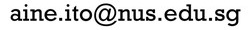

Aine Ito
伊藤愛音

Assistant Professor
Department of English, Linguistics and Theatre Studies
National University of SingaporeAbout me
Hello! I am an Assistant Professor at the Department of English, Linguistics and Theatre Studies at the National University of Singapore.Research interests
My research focuses on prediction during language comprehension and non-native language processing. Language comprehension in a native language is very efficient. While speakers can easily produce 2-5 words per second, native listeners typically have no conscious difficulty in keeping up with the speech and understanding the meaning of the speech.But such real-time comprehension can be difficult for non-native speakers. Even if they have sufficient vocabulary and a good grammatical knowledge, they may fail to comprehend sentences as efficiently as native speakers do.
My research investigates what makes it difficult to comprehend a non-native language efficiently and explores ways to facilitate non-native language processing with a focus on predictive processing. I am also interested in how orthographic information influences listening comprehension. I mainly use eye-tracking (visual world paradigm), EEG and reaction time measures in my experiments.
Supervision
I am happy to take on PhD students in these areas. Please email me if you are interested :)Keywords
Psycholinguistics, Language prediction, Non-native language processing, Bilingualism, Sentence comprehension, Orthographic processing, Visual world paradigm, EEG/ERPContacts
|
Department of English, Linguistics and Theatre Studies, Faculty of Arts and Social Sciences |
|
|
 |
|
|
+65 6516 6042 |
|
|
|